3
യൂൂണിിറ്റ്്
ഭൂൂമിിയുടെെ ചലനങ്ങൾ:
ഭ്രമണ
വുംംc പരിിക്രമണ
വുംംc
ഹലോോ ശ്രുുതിി... ഹാാപ്പിി ന്യൂൂ ഇയർ !
ആഘോോvോഷങ്ങൾ ഒക്കെÚ തുടങ്ങിയോ�ോ?
ശരിിയാാ, ഞാാനത്് മറന്നുു. ഇവിിടെെ ഓസ്്ട്രേğലിയ
യിൽ ഇന്ത്യയയ്ക്ക്് മുൻപേ ന്യൂൂ ഇയർ എത്തുുമല്ലോോƽോ?
ഹാായ് രാാഹുൽ ! ഇവിിടെെ ഇന്ത്യയയിൽ ന്യൂൂ
ഇയർ ആയിട്ടിില്ല. ഇനിയുംംc അഞ്ചര മണിിക്കൂൂർ
കൂൂടി വേ�ണംം ന്യൂൂ ഇയർ ആകാാൻ.
എങ്ങനെ�യുുണ്ട്് അവിിടത്തെ� കാാലാാവസ്ഥ?
ഇവിിടെെ നല്ല തണു
ുപ്പാാണ്
്. വൈൈകുുന്നേ�രംം
നേ�രത്തെ�
ഇരുട്ട് വീഴും�ം.
അതല്ലേƽ തമാാശ ! ഇവിിടെെ ഇപ്പോ�ോൾ
വേ�നൽക്കാാലമാാണ്. രാാത്രിി 8 മണിി വരെെ
സൂൂര്യയപ്രകാാശംം ഉണ്ടാാവുംംc
ഓസ്്ട്രേğലിയയിലുംംc ഇന്ത്യയയിലുംംc ഉള്ള സുഹൃത്തുുക്കളുുടെെ സംംഭാാഷണംം
ശ്രദ്ധിിച്ചല്ലോോƽോ. രണ്ട്് വ്യയത്യയസ്ത സ്ഥലങ്ങളിൽ അനുഭവപ്പെ�ടു
ുന്ന
സമയവ്യയത്യാാ�സവുംംc അവിിടെെയുുള്ള ഋതുക്കളിലുള്ള മാാറ്റങ്ങളുുമാാണ്
സംംഭാാഷണത്തിൽ പ്രതിിപാാദിിക്കുന്നത്്. ദൈൈനംംദിിന ജീീവിിതത്തിൽ
നാം അനുഭവിിക്കുന്ന ഈ പ്രതിിഭാാസങ്ങളുുടെെ സവിിശേ�ഷതകൾ
എന്തൊ�ൊക്കെÚയെ�ന്ന്് പരിിശോ�ോധിിക്കാം.
ചിിത്രംം 3.1 l
ചിിത്രംം 3.2 l
Page 43

Page 44

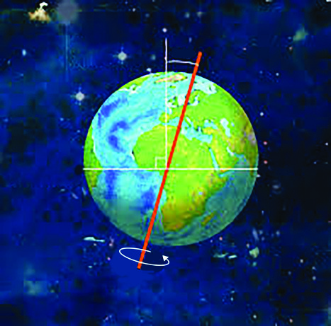


44
ഭ്രമണംം (Rotation)
ഭ്രമണത്തെ�ക്കു
ുറിച്ച് മുൻ ക്ലാാസുുകളിിൽ ചർച്ച ചെ�യ്തിിരുന്നുുവല്ലോലോƽോ?
ഭ്രമണവുുമായിി ബന്ധപ്പെƀട്ട ചോ�ോദ്യയങ്ങൾക്ക്് ചിിത്രംം നിിരീീക്ഷിിച്ച്് ഉത്തരം കണ്ടെെĬത്തുക.
l ഭൂൂമിയുടെെ ഭ്രമണദിശ
l അച്ചുതണ്ടിന്റെെź ചരിിവ്
ചിത്രത്തി
ിൽ നിന്ന് ഭൂൂമിയുടെെ ഭ്രമണദിിശ പടിഞ്ഞാാറ് നിന്ന് കിഴക്കോോÚോട്ടാാ
ണെ�ന്ന്് തിിരിിച്ചറിഞ്ഞല്ലോലോƽോ. അതുകൊ�ൊണ്ടാാണ്
് സൂൂര്യയൻ കിഴക്ക് ഉദിിച്ച്
പടിഞ്ഞാാറ് അസ്തമിക്കുന്നതാായി
ി നമുുക്ക് അനുഭവപ്പെ�ടു
ുന്നത്്.
ഭ്രമണത്തിന്റെെź ഫലമാായുണ്ടാാകു
ുന്ന പ്രധാാന മാാറ്റങ്ങളാാണ് ദിിനരാാത്ര
ങ്ങളും�ം
കോ�ോറിയോ�ോലിസ്് പ്രഭാാവവുംംc.
ദിിനരാത്രങ്ങൾ
ഭ്രമണംം പൂൂർത്തിയാാക്കാാൻ ഭൂൂമി എടുക്കുന്ന സമയംം 24 മണിിക്കൂൂർ
(23 മണിിക്കൂൂർ 56 മിനിറ്റ് 4 സെ�ക്കന്റ്) ആണെ�ന്ന്് അറിയാാമല്ലോോƽോ.
ഭൂൂമിക്ക് പ്രകാാശംം ലഭിിക്കുന്നത്് സൂൂര്യയനിൽ നിന്നാാണ്
്. ഭ്രമണവേ�ളയി
ിൽ
സൂൂര്യയന് അഭിമുഖമാായി വരുുന്ന ഭാാഗത്ത് പകലുംംc മറുഭാാഗത്ത് രാാത്രിിയുംംc
അനുഭവപ്പെ�ടു
ുന്നുു. ഇത്തരത്തി
ിൽ ഭൂൂമിയിലെെ രാാത്രിിയെ�യുംംc പകലിിനെ�യുംം
c
വേ�ർതിിരിിക്കുന്ന സാാങ്കല്പിിക രേ�ഖയാാണ് പ്രകാാശവൃത്തംം (Circle of
Illumination).
ഭൂൂമിയുടെെ
അച്ചുതണ്ടുംംc പ്രകാാശവൃത്തവുംം
c
സമാാന്തരമല്ലെെƽന്ന് ചിത്രംം 3.4ൽ
നിന്ന് വ്യയക്തമല്ലേƽ?
ഭ്രമണംം ഇല്ലെെƽങ്കിൽ ഭൂൂമിയിലെെ
ദിിനരാാത്ര
ങ്ങളുുടെെ അവസ്ഥ
എന്താാകുംം
c എന്ന് ചിന്തിച്ച്
നോ�ോക്കൂൂ.
സൗൗരയൂൂഥത്തിലെെ
ശുക്രനുംം� യുറാാനസ്സുംം�
ഒഴിികെ�യുുള്ള
ഗ്രഹങ്ങളുുടെെ ഭ്രമണ
ദിശ പടിഞ്ഞാാറ്
നിിന്ന്് കിഴക്കോ�ോട്ടാണ്.
ശുക്രന്റെെźയുംം�
യുറാാനസ്സിന്റെെźയുംം�
ഭ്രമണദിശ, എതിർ
ദിശയിിൽ
കിഴക്ക്് നിിന്ന്്
പടിഞ്ഞാാറോ�ോട്ടാാണ്.
ശുുക്രൻ
യുുറാാനസ്സ്്
ഭ്രമണ
ദിിശ
പടിഞ്ഞാാറ്്
കിിഴക്ക്്
അച്ചുുതണ്ടിിന്റെെź
ചരിിവ്
23.50
ചിിത്രംം 3.3 l
lചിിത്രംം 3.4
Page 45


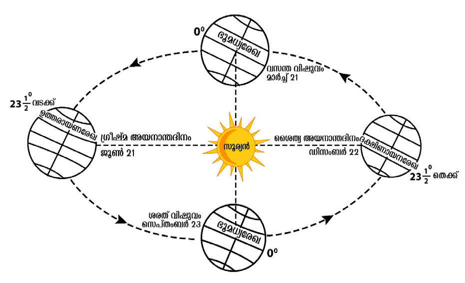
45
ഭൂൂമിിയുുടെെ ചലനങ്ങൾ:
ഭ്രമണവുംംc പരിിക്രമണവുംംc
കോ�ോറിിയോ�ോലിിസ്് പ്രഭാവംം (Coriolis Effect)
ഭ്രമണംം മൂൂലംം ഭൗമോ�ോപരിിതലത്തിൽ സ്വതന്ത്രമാായി ചലിക്കുന്ന
വസ്തുക്കൾക്ക് ദിിശാാവ്യയതിിയാാനംം സംംഭവിിക്കുന്നുു. ഇതിിന്് കാാരണമാാ
യ
ബലത്തെ� കോ�ോറിയോ�ോലിസ്് ബലംം (Coriolis Force) എന്നുംംc ഈ ദിിശാാവ്യയ
തിിയാാനത്തെ�
കോ�ോറിയോ�ോലിസ്് പ്രഭാാവംം എന്നുംംc പറയുന്നുു.
കോ�ോറിയോ�ോലിസ്് പ്രഭാാവത്താാൽ സമുുദ്രജലപ്രവാാഹങ്ങളുുടെെയുംംc കാാറ്റു
കളുുടെെയുംംc സഞ്ചാാരദിിശ ഉത്തരാാ
ർധഗോ�ോളത്തിൽ വലതുുവശത്തേ�ക്കുംംc
ദക്ഷിിണാാർധഗോ�ോളത്തിൽ ഇടതുവശത്തേ�ക്കുംംc വ്യയതിിചലിക്കുന്നുുവെ�ന്ന്്
അഡ്മിിറൽ ഫെ�
റൽ കണ്ടെ�ത്തി
ി. ഇതാാണ് ഫെ�
റൽ നിയമംം (Ferrel’s Law).
l സൂൂര്യയൻ കിഴക്ക് ഉദിിക്കുകയുംംc പടിഞ്ഞാാറ്
അസ്തമിക്കുകയുംംc ചെ�യ്യുുന്നുു
l ഇരു അർധഗോ�ോളങ്ങളിലുംംc സ്വതന്ത്രമാായി
ചലിക്കുന്ന വസ്തുക്കൾക്ക് ദിിശാാവ്യയതിിയാാനംം
ഉണ്ടാാകു
ുന്നുു.
ഭ്രമണവുുമായിി ബന്ധപ്പെƀട്ട ചിില വസ്തുുതകളാണ് ചുവടെെെ നൽകിയിിട്ടുള്ളത്. അവയുുടെെ
കാരണം
ം കണ്ടെെĬത്തി പട്ടിക പൂർത്തിയാക്കുക.
തന്നിരിക്കുന്ന കലണ്ടറിൽ നിിന്നുംം� 2024 ഒരു അധിിവർഷമാണെ�
ന്ന്്
തിരിച്ചറിിഞ്ഞല്ലോോƽോ.
2024ന് ശേ�ഷം വരുുന്ന അഞ്ച്് അധിിവർഷങ്ങൾ കണ്ടെെĬത്തുക.
പരിിക്രമണംം (Revolution)
ചിത്രംം 3.6 ശ്രദ്ധിിക്കൂൂ. ഭൂൂമി അതിിന്റെെź അച്ചുതണ്ടിൽ
കറങ്ങുന്നതിിനോ�ോടൊ�ൊപ്പംം നിശ്ചിിത ഭ്രമണപഥത്തിൽ
സൂൂര്യയനുചുറ്റും�ം പ്രദക്ഷിിണംം വയ്ക്കുകയുംംc
ചെ�യ്യുുന്നുു. ഇതിിനെ� പരിിക്രമണംം എന്നുുപറയുന്നുു.
ദീർഘവൃത്താാകൃതിിയിലുള്ള സഞ്ചാാരപഥത്തിൽ
ഒരു പരിിക്രമണംം പൂൂർത്തിയാാക്കാാൻ എടുക്കുന്ന
സമയംം 365¼ ദിിവസ
ങ്ങളാാണ്. പ്രാായോ�ോഗിക
സൗൗകര്യയത്തിനാായി
ി ഇതിിൽ 365 ദിിവസത്തെ�
ഒരു
വർഷമാായി കണക്കാാക്കുന്നുു. ഓരോ�ോ വർഷവുംംc അധിികമാായിവരുുന്ന കാാൽ
(¼) ദിിവസ
ങ്ങളെ� നാാലു
ുവർഷംം കൂൂടുമ്പോോƠോൾ കൂൂട്ടിിച്ചേ�ർത്ത് ഫെ�
ബ്രുുവരിി
മാാസത്തിൽ 29 ദിിവസമാായി
ി കണക്കാാക്കുന്നുു. ഇപ്രകാാരംം 366
ദിിവസ
ങ്ങളുുള്ള വർഷത്തെ� അധിിവർഷംം (Leap Year) എന്നുുപറയുന്നുു.
ചിിത്രംം 3.5 l അഡ്മിിറൽ ഫെെറൽ
ചിിത്രംം 3.6 l
ഫെെബ്രുുവരിി 2024
Page 46

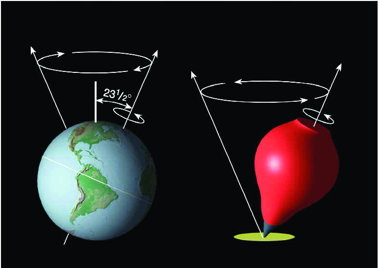
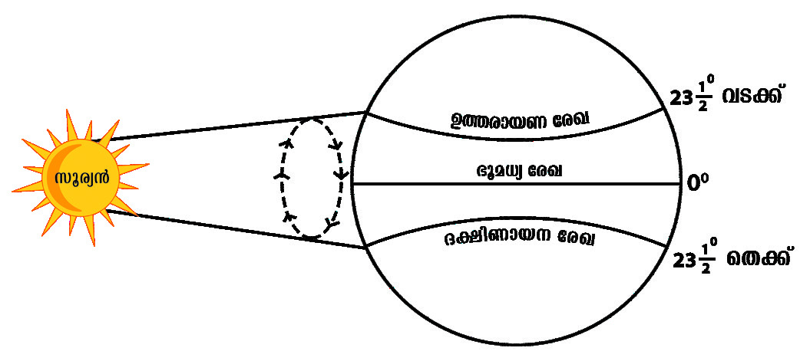
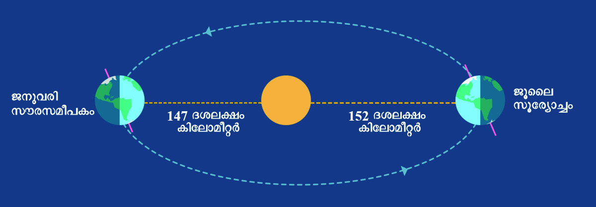
46
ഭ്രമണവുംം� പരിക്രമണവുംം�
പോ�ോലെെ തന്നെ�യുുള്ള
ഭൂൂമിയുടെെ മറ്റൊǯൊരുു ചലനമാാണ്
അച്ചുതണ്ടിന്റെെź ഭ്രമണമായ
പുരസരണം
ം. ഭൂൂമി തന്റെെź
അച്ചുതണ്ടിൽ ഒരു ഭ്രമണം
പൂർത്തിയാക്കാൻ 24 മണിക്കൂർ
എടുക്കുമ്പോോƠോൾ ഏകദേ�ശംം 26,000
വർഷം എടുത്താണ് ചിിത്രത്തി
ിൽ
കാണിച്ചിരിക്കുന്നതുുപോ�ോലെെ ഒരു
വൃത്തം തീർക്കുന്ന രീീതിയിിൽ
വളരെെ
സാവധാാനത്തിൽ
ഭൂൂമിയുടെെ അച്ചുതണ്ട്
നീങ്ങുന്നത്്.
പുുരസരണംം
(Precession)
ഭൂൂമിയുടെെ അച്ചുതണ്ടിന്റെെź ചരിിവ് 23½0 യാായി പരിിക്രമണ വേ�ളയിിലുട
നീളംം നിലനിിർത്തുുന്നതിിനാാൽ സൂൂര്യയന്റെെź ആപേക്ഷിികസ്ഥാാനംം ഉത്തര
ദിിശയിലേക്കുംംc ദക്ഷിിണദിിശയിലേക്കുംംc ഉത്തരാാ
യണ-ദക്ഷിിണാായന
രേ�ഖകൾക്കിടയിൽ നീങ്ങുന്നതാായി
ി കാാണാം. സൂൂര്യയന്റെെź ഈ ആപേക്ഷിിക
സ്ഥാാനമാാ
റ്റത്തെ� അയനംം എന്നുുപറയുന്നുു. ഇതിിനനുുസൃതമാായി ദിിനരാാത്ര
ങ്ങളുുടെെ ദൈൈർഘ്യയത്തിൽ വ്യയത്യാാ�സംം അനുഭവപ്പെ�ടും�ം
. ഇത്തരത്തി
ിൽ
സൂൂര്യയന്റെെź സ്ഥാാനംം വിിവിിധ അക്ഷാംശങ്ങളിൽ നേ�ർമുകളിിൽ എത്തുുന്ന
ചില പ്രധാാന ദിിനങ്ങൾ ഏതൊ�ൊ
ക്കെÚയെ�ന്ന്് നോ�ോക്കാം.
പുരസരണംം
പുരസരണംം
ജനുവരിി
സൗരസമീീപകംം
ജൂലൈൈ
സൂര്യോ�ോ�ച്ചംം
147 ദശലക്ഷംം
കിിലോ�ോമീീറ്റർ
152 ദശലക്ഷംം
കിിലോ�ോമീീറ്റർ
lചിിത്രംം 3.7
lചിിത്രംം 3.8
lചിിത്രംം 3.9
അയനംം (Apparent Movement of the Sun)
സൗരസമീീപകംം (Perihelion) സൂര്യോ�ോ�ച്ചംം (Aphelion)
ഭൂൂമിയുടെെ സഞ്ചാാരപഥംം ദീർഘവൃത്താാകൃതിിയിൽ ആയതു കൊ�ൊ
ണ്ട്്
ഭൂൂമിക്കുംംc സൂൂര്യയനുംംc തമ്മിിലുള്ള ദൂൂരത്തിന്് വ്യയത്യാാ�സംം വരും�ം.
ഒരു പരിിക്രമണ വേ�ളയിിൽ ഭൂൂമി സൂൂര്യയനോ�ോട് ഏറ്റവുംംc അടുത്ത്
വരുുന്നതിിനെ� (147 ദശലക്ഷംം കിിലോോമീറ്റർ) സൗൗരസമീീപകംം
(Perihelion) എന്നുു പറയുന്നുു. ഇത് സംംഭവിിക്കുന്നത്് ജനുുവരിി
മാാസത്തിലാാണ് (പൊൊതുുവെ�
ജനുുവരിി 3). സൂൂര്യയനുംംc ഭൂൂമിയുംംc
തമ്മിിലുള്ള അകലംം ഏറ്റവുംംc കൂൂടുതലാായിരിിക്കുന്നത്് (152
ദശലക്ഷംം കിിലോോമീറ്റർ) ജൂൂലൈൈ മാാസത്തിലാാണ് (പൊൊതുുവെ�
ജൂൂലൈൈ 4). ഇതിിനെ�
സൂൂര്യോ�ോ�ച്ചംം (Aphelion) എന്നുു പറയുന്നുു.
ഒരു സെ�ക്കന്റിൽ ഏകദേ�ശംം
30 കിലോോമീറ്റർ എന്ന രീതിിയിലാാണ്
ഭൂൂമിയുടെെ പരിിക്രമണ വേ�ഗത. ഭൂൂമിയുംംc സൂൂര്യയനുംംc തമ്മിിലുള്ള
അകലവ്യയത്യാാ�സംം ഗുരുത്വാാ�കർഷണത്തിൽ വ്യയതിിയാാനംം
സൃഷ്ടിിക്കുകയുംംc പരിിക്രമണ വേ�ഗതയിിൽ വ്യയത്യാാ�സംം വരുുന്ന
തിിന്് കാാരണമാാവുുകയുംംc ചെ�യ്യുംംc.
ആപേ�ക്ഷിികസ്ഥാാനം വ്യക്തമാക്കാനുള്ള
ചിിത്രീകരണം
ം. തോ�ോത് അടിസ്ഥാാനമാാക്കിയല്ല.
Page 47


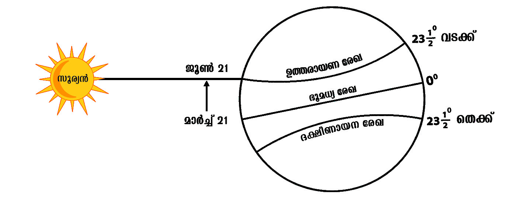
47
ഭൂൂമിിയുുടെെ ചലനങ്ങൾ:
ഭ്രമണവുംംc പരിിക്രമണവുംംc
സൂര്യന്റെź
ആപേ�ക്ഷിിക
സ്ഥാാനം
ഉത്തരായണ ദക്ഷിിണായന
രേ�ഖകൾക്കിടയിിൽ
സൂര്യന്റെെź സ്ഥാാനം
മാറുന്നതാായിി
അനുഭവപ്പെƀടുന്നു.
യഥാാർഥത്തിൽ
ഭൂൂമിയുടെെ അച്ചുതണ്ടിന്റെെź
ചരിിവുംം� പരിക്രമണവുംം�
കാരണം
ം ഭൂൂമിയിിൽ
നിിന്ന്് നോ�ോക്കുുമ്പോോƠോൾ
സൂര്യന്റെെź സ്ഥാാനം
മാറുന്നതാായിി നമുുക്ക്്
അനുഭവപ്പെƀടുന്നതാാണ്.
വിഷുുവംം (Equinox)
ചിിത്രംം 3.10 നിിരീീക്ഷിിച്ച്് ഉത്തരം കണ്ടെെĬത്തുക.
l സൂൂര്യയരശ്മിികൾ ഏത് അക്ഷാംശരേ�ഖയിിലാണ്
ലംബമായിി പതിക്കുന്നത്്?
l ഏതൊ�ൊക്കെ�
ദിവസ
ങ്ങളിലാണ് ഇങ്ങനെ�
സംഭവിിക്കുന്നത്?
മാർച്ച്് 21, സെ�പ്്റ്റംബർ 23 എന്നീ ദിവസ
ങ്ങളിൽ
നിിങ്ങളുുടെെ പ്രദേ�ശത്തെ� പകലിന്റെെź ദൈൈർഘ്യംം�
കലണ്ടറിലെെ ഉദയാാസ്തമയ സമയത്തെ�
അടിസ്ഥാാനമാാക്കി കണ്ടെെĬത്തുക.
പരിിക്രമണവേ�ളയി
ിൽ ഭൂൂമധ്യയരേ�ഖയിൽ സൂൂര്യയരശ്മിികൾ ലംംബമാായി
പതിിക്കുന്ന ദിിനങ്ങളാായ മാാർച്ച് 21നുംംc സെ�പ്്റ്റംംബർ 23നുംംc രണ്ട്്
അർധഗോ�ോളങ്ങളിലുംംc രാാത്രിിയുടെെയുംംc പകലിിന്റെെźയുംംc ദൈൈർഘ്യംംc
തുല്യയമാായിരിിക്കുംംc. ഈ ദിിനങ്ങളെ� വിിഷുവങ്ങൾ അല്ലെെƽങ്കിൽ സമരാാത്ര
ദിിനങ്ങൾ (Equinox) എന്നുുവിിളിക്കുന്നുു. മാാർച്ച് 21 വസന്ത
വിിഷുവംം
(Spring Equinox) എന്നുംംc സെ�പ്
്റ്റംംബർ 23 ശരത്് വിിഷുവംം
(Autumnal Equinox) എന്നുംംc അറിയപ്പെ�ടുുന്നുു. ചിത്രംം 3.6 കൂൂടി നിരീ
ക്ഷിിച്ച് വിിഷുവദിിനങ്ങളിൽ ഭൂൂമിയുടെെ സ്ഥാാനംം തിിരിിച്ചറിയൂൂ.
ഗ്രീീഷ്മ അയനാാന്തദിിനംം (Summer Solstice)
ഉത്തരായണരേ�
ഖ
ഭൂൂമധ്യയരേ�ഖ
ദക്ഷിണായനരേ�ഖ
മാർച്ച് 21
സെ�പ്്റ്റംംബർ 23
23½0 വടക്ക്്
23½0 തെ�ക്ക്്
00
ചിിത്രംം 3.10 l
ചിിത്രംം 3.11 l
ആശയവ്യക്തതക്കായുള്ള ചിിത്രീകരണം
ം.
തോ�ോത് അടിസ്ഥാാനമാാക്കിയല്ല.
Page 48


48
ഉത്തരാാ
ർധഗോ�ോളത്തിൽ മാാർച്ച് 21 മുതൽ ജൂൂൺ 21 വരെെയു
ുള്ള
കാാലയളവിിൽ ഭൂൂമധ്യയരേ�ഖയിൽ നിന്ന് സൂൂര്യയന്റെെź ആപേക്ഷിികസ്ഥാാനമാാറ്റംം
വടക്കോോÚോട്ട് ഉത്തരാാ
യണരേ�ഖവരെെയാാണ്
്. ഇതിിന്റെെź ഫലമാായി ജൂൂൺ
21ന്് ഉത്തരാാ
ർധഗോ�ോളത്തിൽ ഏറ്റവുംംc ദൈൈർഘ്യയമേ�റിയ പകലുംംc
ഏറ്റവുംംc ഹ്രസ്വമാായ രാാത്രിിയുംംc അനുഭവപ്പെ�ടു
ുന്നുു. ഈ ദിിവസംം ഗ്രീീഷ്മ
അയനാാന്ത
ദിിനംം എന്നറിിയപ്പെ�ടുുന്നുു. ചിത്രംം 3.6 നിരീക്ഷിിച്ച് ഗ്രീീഷ്മ
അയനാാന്ത
ദിിനത്തി
ിൽ ഭൂൂമിയുടെെ സ്ഥാാനംം തിിരിിച്ചറിയുമല്ലോോƽോ?
മാാർച്ച് മുതൽ സെ�പ്്റ്റംംബർ വരെെയു
ുള്ള ആറുമാാസക്കാാലംം സൂൂര്യയന്റെെź
ആപേക്ഷിികസ്ഥാാനംം ഉത്തരാാ
ർധഗോ�ോളത്തിൽ ആയതിിനാാൽ ഈ
കാാലയളവിിൽ ഉത്തരധ്രുുവ പ്രദേ�ശങ്ങളിൽ ആറ് മാാസക്കാാലംം തുടർച്ച
യാായി പകൽ വെ�ളിിച്ചമുണ്ടാാകുംംc.
ചിിത്രംം 3.11 നിിരീീക്ഷിിക്കൂ.
l മാർച്ച്് 21 മുതൽ സൂര്യന്റെെź ആപേ�ക്ഷിിക സ്ഥാാനം ഏത് ദിശയിിലേക്കാണ്
മാറുന്നത്്?
l ജൂൂൺ 21ന് ഏത് അക്ഷാംശരേ�ഖയിിലാണ് സൂര്യരശ്മിികൾ ലംബമായിി
പതിക്കുന്നത്്?
ഗ്രീഷ്മ അയനാാന്തദിനത്തിൽ (ജൂൂൺ 21) ദക്ഷിിണാർധഗോോuോളത്തിിലെെ പകലിന്റെെź
ദൈൈർഘ്യയത്തിന് എന്ത് മാറ്റമാണുണ്ടാകുന്നത്്?
ഗ്രീീഷ്മ അയനാാന്ത
ദിിനത്തി
ിൽ (ജൂൂൺ 21) വിിവിിധ അക്ഷാംശ രേ�ഖകളിിലെെ
പകലിിന്റെെź ദൈൈർഘ്യംംc സൂൂചിപ്പിിക്കുന്ന പട്ടിികയാാണ് ചുവടെെ നൽകി
യിട്ടുള്ളത്.
അക്ഷാംംശരേ�ഖ
പകലിിന്റെെź ദൈൈർഘ്യംംc
900 വടക്ക്
24 മണിിക്കൂൂർ
66½0 വടക്ക്
24 മണിിക്കൂൂർ
23½0 വടക്ക്
13 മണിിക്കൂൂർ 27 മിനിറ്റ്
00
12 മണിിക്കൂൂർ
23½0 തെ�ക്ക്്
10 മണിിക്കൂൂർ 33 മിനിറ്റ്
66½0 തെ�ക്ക്്
ഇല്ല
900 തെ�ക്ക്്
ഇല്ല
ഭൂൂമിക്കുംം� ചന്ദ്രനുംം� സമാാനമാായിി സൂര്യനുംം� രണ്ട് ചലന
ങ്ങളുുണ്ട് - ഭ്രമണവുംം� പരിക്രമണവുംം�.
സൂര്യൻ അതിന്റെെź അച്ചുതണ്ടിൽ 27 ദിവസ
ങ്ങൾ കൊ�ൊണ്ട് ഒരു ഭ്രമണം പൂർത്തിയാക്കുംം�,
എന്നാൽ 230 മുതൽ 250 ദശലക്ഷംം വർഷങ്ങൾ കൊ�ൊണ്ടാണ് സൂര്യൻ ഉൾപ്പെƀടെെയുള്ള
സൗൗരയൂൂഥം നക്ഷത്രവ്യൂൂ�ഹമായ ക്ഷീരപഥത്തിന്റെെź കേ�ന്ദ്രത്തെ� പരിക്രമണം ചെ�യ്യുുന്നത്്.
സൂര്യന്റെź ചലനങ്ങൾ
Page 49


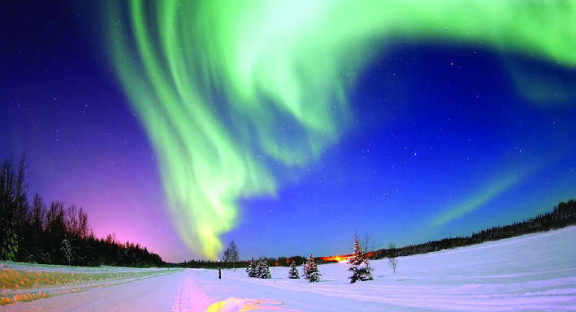
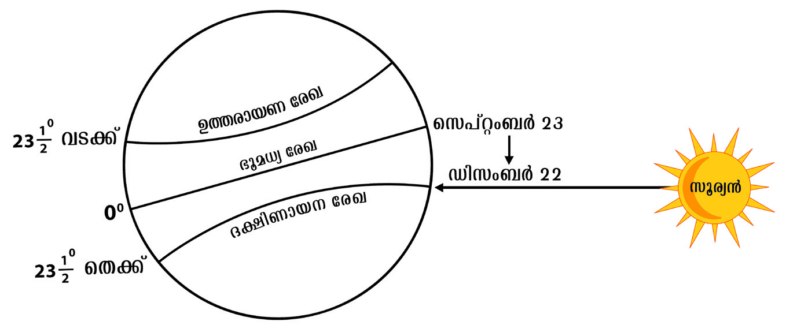
49
ഭൂൂമിിയുുടെെ ചലനങ്ങൾ:
ഭ്രമണവുംംc പരിിക്രമണവുംംc
ഉത്തരാാർധഗോuോളത്തിലെ ധ്രുുവപ്രദേശത്ത് ആറുുമാാസക്കാാലം പകലായിിരിക്കുംം�.
അങ്ങനെെയെ�ങ്കിിൽ ഈ കാലയളവിൽ ദക്ഷിിണധ്രുുവപ്രദേശങ്ങളിലെ രാാത്രിിയുടെെ
ദൈൈർഘ്യംം� എപ്രകാരമാായിിരിക്കുംം�
?
ചിിത്രം 3.12 നിരീക്ഷിിക്കുക
സെ�പ്റ്റംംബർ 23 മുതൽ സൂര്യയന്റെെź ആപേ�ക്ഷിിക
സ്ഥാാനം ഏത് ദിശയിിലേക്കാാണ് മാാറുുന്നത്?
ഡിിസംബർ 22ന് ഏത് അക്ഷാംശരേ�ഖയിിലാണ്
സൂര്യയരശ്മിികൾ ലംബമാായിി പതിക്കുന്നത്?
അക്ഷാംംശരേഖ
പകലിിന്റെź ദൈൈർഘ്യംംc
900 വടക്ക്്
ഇല്ല
66½0 വടക്ക്്
ഇല്ല
ധ്രുുവദീീപ്തിി
(Aurora)
ധ്രുുവപ്രദേശത്ത്
ശൈൈത്യയകാലങ്ങളിൽ
ശക്തമാായ സൗരവാാതങ്ങൾ
ഉണ്ടാാകുന്ന സമയത്ത്
കാണാൻ കഴിിയുന്ന
ഒരു പ്രതിഭാാസമാാണ്
ധ്രുുവദീപ്തിി. ഉയർന്ന
അക്ഷാംശ പ്രദേശങ്ങളിൽ
അന്തരീക്ഷത്തി
ിലെ
പ്രകൃതിദത്തമാായ വർണ്ണ
വെ�ളിച്ചമാാണ്ധ്രുുവദീപ്തിി.
ഉത്തരധ്രുുവഭാാഗങ്ങളിൽ
അറോ�ോറ ബോ�ോറിിയാലിസ്
(Aurora Borealis) എന്നുംം�
ദക്ഷിിണധ്രുുവഭാാഗങ്ങളിൽ
അറോ�ോറ ഓസ്ട്രാാലിസ്
(Aurora Australis) എന്നുംം�
വിളിക്കുന്നു.
ശൈൈത്യയ അയനാാന്തദിനംം (Winter Solstice)
ദക്ഷിിണാാർധഗോuോളത്തിിൽ സെപ്്റ്റംംബർ 23 മുുതൽ ഡിിസംബർ 22
വരെെയുുള്ള കാാലയളവിൽ ഭൂൂമധ്യരേ�ഖയിൽ നിിന്നുംം� സൂര്യന്റെെź
ആപേ�ക്ഷിിക സ്ഥാാനമാാറ്റംം തെ�ക്കോ�ോട്ട്് ദക്ഷിിണാായനരേ�
ഖ വരെെയാണ്.
ഇതിന്റെെź ഫലമായി ഡിിസംബർ 22ന് ദക്ഷിിണാാർധഗോuോളത്തിിൽ
ഏറ്റവുംം� ദൈൈർഘ്യയമേ�റിിയ പകലുംം� ഏറ്റവുംം� ഹ്രസ്വമായ രാത്രിിയുംം�
അനുഭവപ്പെെƀടുന്നുു. ഈ ദിവസം ശൈൈത്യ അയനാാന്തദിനം എന്നറിിയ
പ്പെെƀടുന്നുു. ചിിത്രം 3.6 നിിരീക്ഷിിച്ച്് ശൈൈത്യ അയനാാന്തദിനത്തിിൽ
ഭൂൂമിയുുടെെ സ്ഥാാനം തിരിച്ചറിിയൂ.
സെപ്്റ്റംംബർ മുുതൽ മാർച്ച്് വരെെ നീളുന്ന ആറുമാസക്കാാലം സൂര്യന്റെെź
ആപേ�ക്ഷിികസ്ഥാാനം ദക്ഷിിണാാർധഗോuോളത്തിിൽ ആയതിിനാൽ
ഈ കാാലയളവിൽ ഉത്തരധ്രുുവപ്രദേ�ശങ്ങളിൽ ആറുമാസക്കാാലം
തുടർച്ചയാായി ഇരുട്ടായിരിക്കുംം�.
ശൈൈത്യ അയനാാന്തദിനത്തിിൽ (ഡിിസംബർ 22) വിവിധ അക്ഷാംശരേ�ഖ
കളിിലെ� പകലിിന്റെെź ദൈൈർഘ്യംം� സൂചിിപ്പിക്കുന്ന പട്ടികയാാണ് ചുവടെെ
നൽകിയിട്ടുള്ളത്.
ചിിത്രം 3.12 l
ചിിത്രം 3.13 l
ആശയവ്യയക്തതക്കാായുള്ള ചിിത്രീകരണം
ം.
തോ�ോത് അടിസ്ഥാാനമാാക്കിയല്ല.
Page 50


50
23½0 വടക്ക്
10 മണിിക്കൂൂർ 33 മിനിറ്റ്
00
12 മണിിക്കൂൂർ
23½0 തെ�ക്ക്്
13 മണിിക്കൂൂർ 27 മിനിറ്റ്
66½0 തെ�ക്ക്്
24 മണിിക്കൂൂർ
900 തെ�ക്ക്്
24 മണിിക്കൂൂർ
സൂര്യയന്റെെź
ആപേ�ക്ഷിിക
സ്ഥാാനംം
ദിിവസംം
ദിിനംം
ഉത്തരാർധഗോോuോളംം
ദക്ഷിണാർധഗോോuോളംം
പകലിിന്റെെź
ദൈൈർഘ്യംംc
രാത്രിയുടെെ
ദൈൈർഘ്യംംc
പകലിിന്റെെź
ദൈൈർഘ്യംംc
രാത്രിയുടെെ
ദൈൈർഘ്യംംc
ഭൂൂമധ്യയരേ�ഖ
----------------------
വസന്ത
വിിഷുവംം
തുല്യയമാായിരിിക്കുംംc
------------------------------
സെ�പ്്റ്റംംബർ 23 -------------
ഉത്തരാാ
യണ
രേ�ഖ
-----------------------
ഗ്രീീഷ്മ
അയ
നാാന്ത
ദിിനംം
---------------
ഏറ്റവുംംc
കുറവ്
------------
എറ്റവുംംc
കൂൂടുതൽ
ദക്ഷിി
ണാായന
രേ�ഖ
ഡിിസംംബർ 22
-------------
ഏറ്റവുംംc
കുറവ്
-----------------
എറ്റവുംംc
കൂൂടുതൽ----------------
പട്ടിക പൂർത്തിയാക്കുക.
ഉത്തരായണംം ദക്ഷിണായനംം
ശൈൈത്യയ അയനാാന്ത
ദിിനത്തെ�
തുടർന്ന് (ഡിിസംംബർ 22) ദക്ഷിിണാായന
രേ�ഖയിൽ നിന്നുംംc (23½0 തെ�ക്ക്്) ഉത്തരാാ
യണ രേ�ഖയിലേക്കുള്ള
സൂൂര്യയന്റെെź അയനത്തെ�
ഉത്തരാാ
യണമെെന്നുംംc ഗ്രീീഷ്മ അയനാാന്ത
ദിിനത്തെ�
തുടർന്ന് (ജൂൂൺ 21) ഉത്തരാാ
യണ രേ�ഖയിൽ നിന്നുംംc (23½0 വടക്ക്)
ദക്ഷിിണാായന രേ�ഖയിലേക്കുള്ള സൂൂര്യയന്റെെź അയനത്തെ�
ദക്ഷിിണാായനംം
എന്നുംംc പറയുന്നുു.
ശൈൈത്യഅയനാാന്തദിനത്തിൽ (ഡിിസംബർ 22) ഉത്തരാർധഗോോuോളത്തിിലെെ പകലിന്റെെź
ദൈൈർഘ്യയത്തിന് എന്തെ�ല്ലാം� മാറ്റങ്ങളുുണ്ടാകുംം�?
Page 51


51
ഭൂൂമിിയുുടെെ ചലനങ്ങൾ:
ഭ്രമണവുംംc പരിിക്രമണവുംംc
ഋതുക്കൾ (Seasons)
സൂൂര്യയന്റെെź ആപേക്ഷിിക സ്ഥാാനമാാറ്റത്തിന്് അനുസരിിച്ച് ഓരോ�ോ പ്രദേ�ശത്തുംംc
സവിിശേ�ഷമാായ കാാലാാവസ്ഥാാസാാഹചര്യയങ്ങൾ സൃഷ്ടിിക്കപ്പെ�ടും�ം. ഈ
കാാലയളവിിനെ� ഋതുക്കൾ എന്നുുവിിളിക്കുന്നുു. ഭൂൂമിയുടെെ പരിിക്രമണവുംംc
സൗൗരോ�ോർജലഭ്യയതയിിലെെ ഏറ്റക്കുറച്ചിലുകളുുമാാണിിതിിന്് കാാരണംം. ഒരു
വർഷത്തിൽ വസന്തകാാലംം
, ഗ്രീീഷ്മകാാലംം, ശരത്്കാാലംം, ശൈൈത്യയകാാലംം
എന്നീ കാാലങ്ങൾ ചാാക്രികമാായി ആവർത്തിക്കപ്പെ�ടുുന്നതാാണ്
് ഋതുഭേ�ദ
ങ്ങൾ.
വിവിധ ഋതുക്കളും�ം അവയുുടെെ സവിിശേ�ഷതകളും�ം
വസ
ന്തകാലം
ഗ്രീഷ്മകാലം
ശരത്്കാലം
ശൈൈത്യകാലം
വസ
ന്തകാലംം
(Spring)
ഗ്രീീഷ്മകാലംം
(Summer)
ശരത്്കാലംം
(Autumn)
ശൈൈത്യയകാലംം
(Winter)
l സസ്യയങ്ങൾ പൂൂക്കുകയുംംc
കാായ്ക്കുകയുംംc ചെ�യ്യുുന്നുു
l ഇക്കാാലയളവിിൽ പകലിിന്റെെź
ദൈൈർഘ്യംംc ക്രമേ�ണ കൂൂടി
വരുുന്നുു
l ഉയർന്ന അന്തരീീക്ഷ താാപനില
l പൊൊതുുവെ� ദൈൈർഘ്യയമേ�റിയ
പകലുുകൾ
l ശൈൈത്യയകാാലത്തിന്റെെź
മുന്നോ�ോടിയാായി വൃക്ഷങ്ങൾ
ഇലകൾ പൊൊഴിിക്കുന്നുു
l ഇക്കാാലയളവിിൽ പകലിിന്റെെź
ദൈൈർഘ്യംംc ക്രമേ�ണ
കുറഞ്ഞുവരുുന്നുു.
l കുുറഞ്ഞ അന്തരീീക്ഷ
താാപനില
l മഞ്ഞുവീഴ്ച
l പൊൊതുുവെ� ദൈൈർഘ്യയമേ�റിയ
രാാത്രിികൾ
ചിിത്രങ്ങൾ 3.14 l
ചിിത്രങ്ങൾ 3.15 l
Page 52


52
സൂര്യയന്റെെź അയനംം
കാലയളവ്്
ഋതുക്കൾ
ഉത്തരാർധഗോോuോളംംദക്ഷിണാർധഗോോuോളംം
l ഭൂൂമധ്യയരേ�ഖയിൽ
നിന്നുംംc ഉത്തരാാ
യണ
രേ�ഖയിലേക്ക്
മാാർച്ച് 21 മുതൽ ജൂൂൺ
21 വരെെ
വസന്തകാാലംം
ശരത്്കാാലംം
l ഉത്തരാാ
യണ
രേ�ഖയിൽ നിന്നുംംc
ഭൂൂമധ്യയരേ�ഖയിലേക്ക്
ജൂൂൺ 21 മുതൽ
സെ�പ്്റ്റംംബർ 23 വരെെ
ഗ്രീീഷ്മകാാലംം
ശൈൈത്യയകാാലംം
l ഭൂൂമധ്യയരേ�ഖയിൽ
നിന്നുംംc ദക്ഷിിണാായന
രേ�ഖയിലേക്ക്
സെ�പ്്റ്റംംബർ 23 മുതൽ
ഡിിസംംബർ 22 വരെെ
ശരത്്കാാലംം
വസന്തകാാലംം
l ദക്ഷിിണാായന
രേ�ഖയിൽ നിന്നുംംc
ഭൂൂമധ്യയരേ�ഖയിലേക്ക്
ഡിിസംംബർ 22 മുതൽ
മാാർച്ച് 21 വരെെ
ശൈൈത്യയകാാലംം
ഗ്രീീഷ്മകാാലംം
ഉത്തര-ദക്ഷിിണാർധഗോോuോളങ്ങളിൽ അനുഭവപ്പെƀടുന്ന വിവിധ ഋതുക്കളെ�ക്കു
ുറിച്ചുള്ള
പട്ടിക നിിരീീക്ഷിിച്ച്് താഴെെപ്പറയുുന്ന ചോ�ോദ്യയങ്ങൾക്ക്് ഉത്തരം കണ്ടെെĬത്തുക.
l ഉത്തരാർധഗോോuോളത്തിിലെെ ഗ്രീഷ്മകാലത്തിൽ സൂര്യന്റെെź ആപേ�ക്ഷിികസ്ഥാാനത്തിന് എന്ത്
മാറ്റമുണ്ടാകുംം�?
l ദക്ഷിിണാർധഗോോuോളത്തിിൽ ശരത്്കാലമായിിരിക്കുമ്പോോƠോൾ ഉത്തരാർധഗോോuോളത്തിിൽ ഏത്
ഋതുവാണ്?
l സെ�പ്്റ്റംബർ 23 മുതൽ ഡിിസംബർ 22 വരെെ ദക്ഷിിണാർധഗോോuോളത്തിിൽ ഏത് ഋതുവാണ്?
l സൂൂര്യന്റെെź ആപേ�ക്ഷിിക സ്ഥാാനം ദക്ഷിിണായനരേ�
ഖയിിൽ നിിന്നുംം� ഭൂൂമധ്യരേ�ഖയിിലേക്ക്്
നീങ്ങുമ്പോോƠോൾ ദക്ഷിിണാർധഗോോuോളത്തിിൽ ഏത് ഋതുവാണ്?
ഇന്ത്യയയിലെ�
പരമ്പരാഗത ഋതുക്കൾ
ഋതുക്കളെ�
പൊ�ൊതു
ുവെ� നാലായിി
തിരിച്ചിട്ടുണ്ടെെĬങ്കിിലുംം� ഇന്ത്യയിിൽ
അന്തരീീക്ഷസ്ഥി
ിതിയിിലെെ മാറ്റങ്ങൾ
അടിസ്ഥാാനമാാക്കി ആറ് വ്യത്യസ്ത ഋതുക്കൾ
ഉള്ളതായിി കണക്കാക്കുന്നു.
l വസ
ന്തകാലം – മാർച്ച്്, ഏപ്രിൽ
l ഗ്രീഷ്മകാലം
– മേ�യ്്, ജൂൂൺ
l വർഷകാലം – ജൂൂലൈൈ, ആഗസ്റ്റ്്
l ശരത്്കാലം – സെ�പ്്റ്റംബർ, ഒക്ടോോÜോബർ
l ഹേ�മന്തകാലം – നവംംബർ, ഡിിസംബർ
l ശിശിരകാാലം – ജനുുവരിി, ഫെെബ്രുുവരിി
ഋതുഭേ�ദങ്ങളും�ം ദിിനരാാത്ര
ങ്ങളും�ം ഉണ്ടാാകു
ുന്നത്്
എങ്ങനെ�യാാണെ�ന്ന്
് ചർച്ച ചെ�യ്തല്ലോലോƽോ? ഇതു
കൂൂടാാതെ� ഭ്രമണത്തിന്റെെź മറ്റൊ�ൊരുു സവിിശേ�ഷത
കൂൂടി നമുുക്ക് പരിിചയപ്പെ�ടാം�.
സമയംം
2024 ജനുുവരിി 14ന്് റിയൽ മാാഡ്രിിഡുംംc എഫ്.സി.
ബാാഴ്സലോോണയുംംc തമ്മിിൽ ബാാഴ്സലോോണയിിൽ
വെ�ച്ച്് നടന്ന സ്പാാനിിഷ് സൂൂപ്പർ കപ്പ് ഫുട്ബോ�ോൾ
ഫൈൈനൽ മത്സരത്തിന്റെെź തൽസമയസംംപ്രേ�ക്ഷ
ണംം വ്യയത്യയസ്ത ഇടങ്ങളിൽ ദൃശ്യയമാാകുന്ന സമയക്ര
മമാാണ് ചിത്രംം 3.16ൽ നൽകിയിരിിക്കുന്നത്്.
Page 53

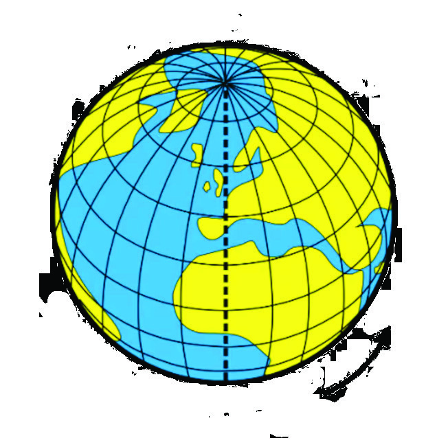
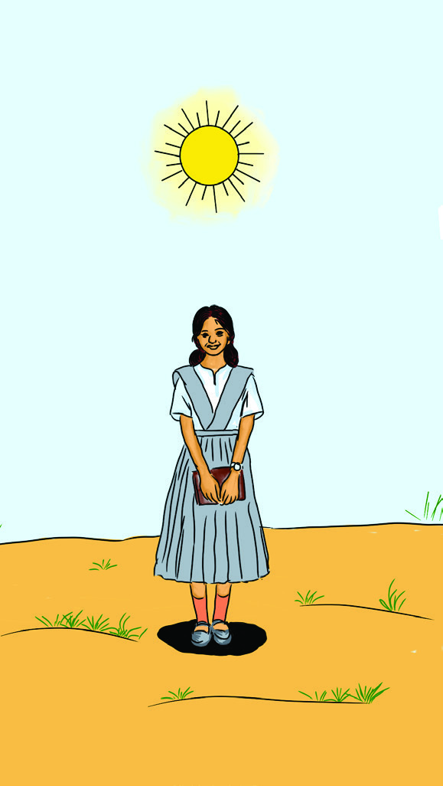
53
ഭൂൂമിിയുുടെെ ചലനങ്ങൾ:
ഭ്രമണവുംംc പരിിക്രമണവുംംc
തൽസമയസംംപ്രേ�ക്ഷണംം ആണെ�ങ്കിിലുംംc ലോോകത്തിന്റെെź
വിിവിിധ ഭാാഗങ്ങളിലുള്ളവർ വ്യയത്യയസ്ത സമയങ്ങളിലാാണ്
മത്സരംം വീക്ഷിിക്കുന്നതെ�ന്ന്
് തിിരിിച്ചറിഞ്ഞല്ലോലോƽോ. ഇത് എന്തു
കൊ�ൊണ്ടാാണെ�ന്ന്
് നമുുക്ക് പരിിശോ�ോധിിക്കാം.
ഭൂൂമിക്ക് ഒരു ഭ്രമണംം പൂൂർത്തിയാാക്കാാൻ അഥവാാ അതിിന്റെെź
അച്ചുതണ്ടിൽ 3600 തിിരിിയാാൻ 24 മണിിക്കൂൂർ സമയംം
ആവശ്യയമാാണ്. 150 തിിരിിയാാൻ ഒരു മണിിക്കൂൂർ (60 മിനിറ്റ്)
എങ്കിൽ ഒരു ഡിിഗ്രി കടക്കാാൻ എത്ര സമയംം വേ�ണംം?
150
=
1 മണിിക്കൂൂർ = 60 മിനിറ്റ്
10
=
15
60
= 4 മിനിറ്റ്
ഓരോ�ോ ഡിിഗ്രി രേ�ഖാംശവ്യാാ�പ്തിിക്കുംംc ആനുപാാതിികമാായ സമയവ്യയത്യാാ�സംം
നാാല്
് മിനിറ്റ് ആണ്.
രേ�ഖാംശരേ�ഖയിൽ എങ്ങനെ�യാാണ്
് സമയംം കണക്കാാക്കുന്നതെ�ന്ന്
്
വ്യയക്തമാായല്ലോോƽോ. സമയനിർണ്ണയവുമാായി ബന്ധപ്പെ�ട്ട ചില പ്രധാാന
ആശയങ്ങൾ പരിിശോ�ോധിിക്കാം.
പ്രാദേ�ശിികസമയംം
(Local Time)
പണ്ടുുകാാലങ്ങളിൽ നിഴലിിനെ�യുംം
c സൂൂര്യയന്റെെź ഉച്ചസ്ഥാാനത്തെ�യുംം
c
അടിസ്ഥാാനമാാക്കി
ിയാാണ് ഓരോ�ോ പ്രദേ�ശത്തെ�യുംംc പ്രാാദേ�ശിികസ
മയംം
നിർണ്ണയിച്ചിരുന്നത്്. സൂൂര്യയന്റെെź സ്ഥാാനംം ഒരാാളുുടെെ തലയ്ക്ക്് നേ�ർമുകളിിൽ
എത്തുുന്ന സമയംം ഉച്ചയ്ക്ക്് 12 മണിി എന്ന് കണക്കാാക്കിയിരുന്നുു. നിഴലിിന്റെെź
നീളംം ഏറ്റവുംംc കുറഞ്ഞ സമയമാാണിിത്. ഇത്തരത്തി
ിൽ നിഴലിിന്റെെź
നീളംം, സൂൂര്യയന്റെെź സ്ഥാാനംം എന്നിവ അടിസ്ഥാാനമാാക്കി
ി കണക്കാാക്കുന്ന
സമയത്തെ� പ്രാാദേ�ശിികസ
മയംം എന്നുുപറയുന്നുു.
ചിിത്രങ്ങൾ 3.16 l
ചിിത്രംം 3.18 l
11am
ലോ�ോസ്്
ഏഞ്ചലസ്്
1pm
മെെക്്സിക്കോ�ോ
2pm
ന്യൂൂ�യോ�ോർക്ക്്
4pm
ബ്രസീ
ീൽ
7pm
ലണ്ടൻ
8pm
ബാഴ്സലോ�ോണ
9pm
കേ�പ്പ്് ടൗ�ൺ
ജനുവരിി
ജനുവരിി
10pm
മോ�ോസ്കോകോǘോ
12.30am
ഡൽഹിി
2am
ജക്കാർത്ത
4am
ടോ�ോക്കിിയോ�ോ
6am
സിഡ്നി
എഫ്.സി.
ബാഴ്സലോ�ോണ
റിയൽ മാഡ്രിിഡ്
14
15
Page 54

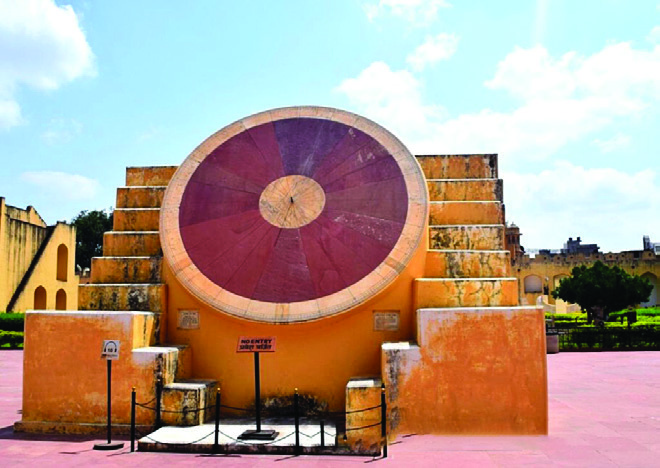
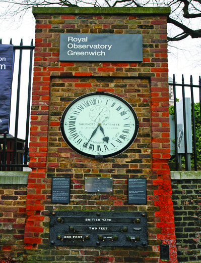
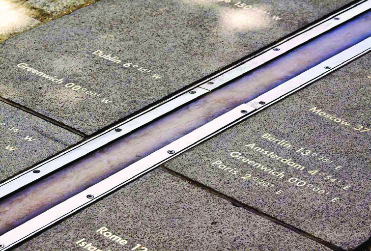
54
പതിനെ�ട്ടാം� നൂറ്റാണ്ടിന്റെെź
തുടക്കത്തിിൽ ജയ്്പൂൂർ
മഹാരാജാവായ ജയ്്സിംം�ഗ്
രണ്ടാമൻ ജയ്്പൂൂരിൽ നിിർമ്മിിച്ച
ജ്യോ�ോ�തിശാസ്ത്ര നിിരീീക്ഷണ
കേ�ന്ദ്രമാണ് ജന്തർമന്തർ. ഇതിൽ
20 പ്രധാന ജ്യോ�ോ�തിശാസ്ത്ര
ഉപകരണങ്ങൾ ഒരു
പ്രദേ�ശത്ത് നിിർമ്മിിച്ചിരിക്കുന്നു.
ഇവ ഉപയോ�ോഗിിച്ച്്
നഗ്നനേ�ത്രങ്ങൾ കൊ�ൊണ്ട്
ജ്യോ�ോ�തിശാസ്ത്രസ്ഥാാനങ്ങൾ
നിിരീീക്ഷിിക്കുന്നതിിനായിി
സാധിിച്ചിരുന്നു. ഇന്ത്യയിിലെെ
അഞ്ച്് ജ്യോ�ോ�തിശാസ്ത്ര നിിരീീക്ഷണ
കേ�ന്ദ്രങ്ങളിൽ ഏറ്റവുംം� വലുുതുംം�
പ്രധാനപ്പെƀട്ടതുമാണിത്.
മറ്റുള്ളവ ഡൽഹി, ഉജ്ജയിിൻ,
മഥുര, വാരണാ
ാസി
എന്നിവിടങ്ങളിലാണ്. 2010-ൽ
ഈ സ്ഥലംം യുനെ�സ്കോോǘോയുുടെെ
ലോോോക പൈൈതൃക പട്ടികയിിൽ
ഉൾപ്പെƀടുത്തി. ഇവിടെെയുള്ള
ഉപകരണങ്ങൾ അക്കാലത്ത്
വളരെെ
കൃത്യതയോ�ോടുു
കൂടി പ്രാദേ�ശിിക
സമയം നിിർണ്ണയിിക്കാൻ
സഹാ
ായിിച്ചിരുന്നു.
ജന്തർമന്തർ
മാനകസമയംം
(Standard Time)
ഓരോ�ോ രേ�ഖാംശരേ�ഖയിലുംംc പ്രാാദേ�ശിികസ
മയംം വ്യയത്യയസ്തമാായി
രിിക്കുംംc. അങ്ങനെ�യെ�ങ്കി
ിൽ ഒരു രാാജ്യയത്തിനകത്തുുതന്നെ�
വ്യയത്യയസ്ത പ്രാാദേ�ശിികസ
മയംം ഉണ്ടാാവിില്ലേƽ? ഇത് ഒരു
രാാജ്യയത്തിൽ പൊൊതുുവാായുള്ള പരീീക്ഷകൾ, റെെയി
ിൽവേ�
സമയംം, റേ�ഡിിയോ�ോസംംപ്രേ�ഷണംം തുടങ്ങിയവയ്ക്ക്് ആശയ
ക്കുഴപ്പമുുണ്ടാാക്കുംംc. ഈ പ്രതിിസന്ധി മറികടക്കാാൻ രാാജ്യയ
ങ്ങൾ അന്താാരാാ
ഷ്ട്ര ധാാരണയുുടെെ അടിസ്ഥാാനത്തി
ിൽ 7½0
രേ�ഖാംശരേ�ഖയുടെെ ഗുണിിതമാായി വരുുന്ന രേ�ഖാംശരേ�ഖയെ�
മാാനകരേ�ഖാം
ംശരേ�ഖയാായി പരിിഗണിിക്കുന്നുു. ഇത്തരത്തി
ിൽ
തിിരഞ്ഞെ�ടുുക്കുന്ന മാാനകരേ�ഖാം
ംശരേ�ഖയിലെെ പ്രാാദേ�ശിിക
സമയത്തെ� ആ രാാജ്യയത്തിന്റെെź മാാനകസ
മയമാായി കണക്കാാ
ക്കുന്നുു.
ഗ്രീീനിച്ച് സമയംം
(Greenwich Mean Time)
അക്ഷാംശവൃത്തങ്ങളുുടെെ വലുുപ്പംം ഭൂൂമധ്യയരേ�ഖയിൽ നിന്ന്
ധ്രുുവങ്ങളിലേക്ക് പോോോകുന്തോ�ോറും�ം കുറഞ്ഞുവരുുന്നതാായി
ി
നിങ്ങൾക്കറിയാാമല്ലോോƽോ? എന്നാാൽ എല്ലാാ രേ�ഖാംശരേ�ഖകളും�ം
അർധവൃത്തങ്ങളല്ലേƽ? അതിിനാാൽ അന്താാരാാ
ഷ്ട്ര സമയനിർണ്ണയ
സൗൗകര്യയത്തിനാായി
ി ഇംംഗ്ലണ്ടിലെെ റോ�ോയൽ ബ്രിട്ടീഷ്
വാാനനിിരീക്ഷണശാാല
സ്ഥിതിി ചെ�യ്യുുന്ന ഗ്രീീനിച്ച്
എന്ന സ്ഥലത്ത്് കൂൂടി പോോോകുന്ന രേ�ഖാംശരേ�ഖയെ�
00
രേ�ഖാംശരേ�ഖയാായി കണക്കാാക്കുന്നുു. ഇതിിനെ� പ്രൈം�ം
മെെറിിഡിിയൻ (Prime Meridian) എന്നുംംc പ്രൈം�ം മെെറിിഡിി
യനിലെെ പ്രാാദേ�ശിിക സമയത്തെ� ഗ്രീീനിച്ച് സമയമെെന്നുംംc
(Greenwich Mean Time) വിിളിക്കുന്നുു. ലോോകത്തെ�
വിിടെെയുംംc
യാാത്രിികർ സമയംം കണക്കാാക്കുന്നത്് ഗ്രീീനിച്ച് സമയത്തെ�
അടിസ്ഥാാനമാാക്കി
ിയാാണ്. ഭൂൂമിയുടെെ ഭ്രമണംം പടിഞ്ഞാാറ്
നിന്ന് കിഴക്കോോÚോട്ട് ആയതിിനാാൽ ഗ്രീീനിച്ച് രേ�ഖയിൽ നിന്ന്
കിഴക്കോോÚോട്ട് ഓരോ�ോ രേ�ഖാംശരേ�ഖയുംംc കടക്കുമ്പോോƠോൾ സമയംം
4 മിനിറ്റ് കൂൂടുകയുംംc പടിഞ്ഞാാറോ�ോട്ട് നീങ്ങുമ്പോോƠോൾ 4 മിനിറ്റ്
കുറയുകയുംംc ചെ�യ്യുംംc.
ചിിത്രംം 3.19 l
ചിിത്രംം 3.20 l
Page 55


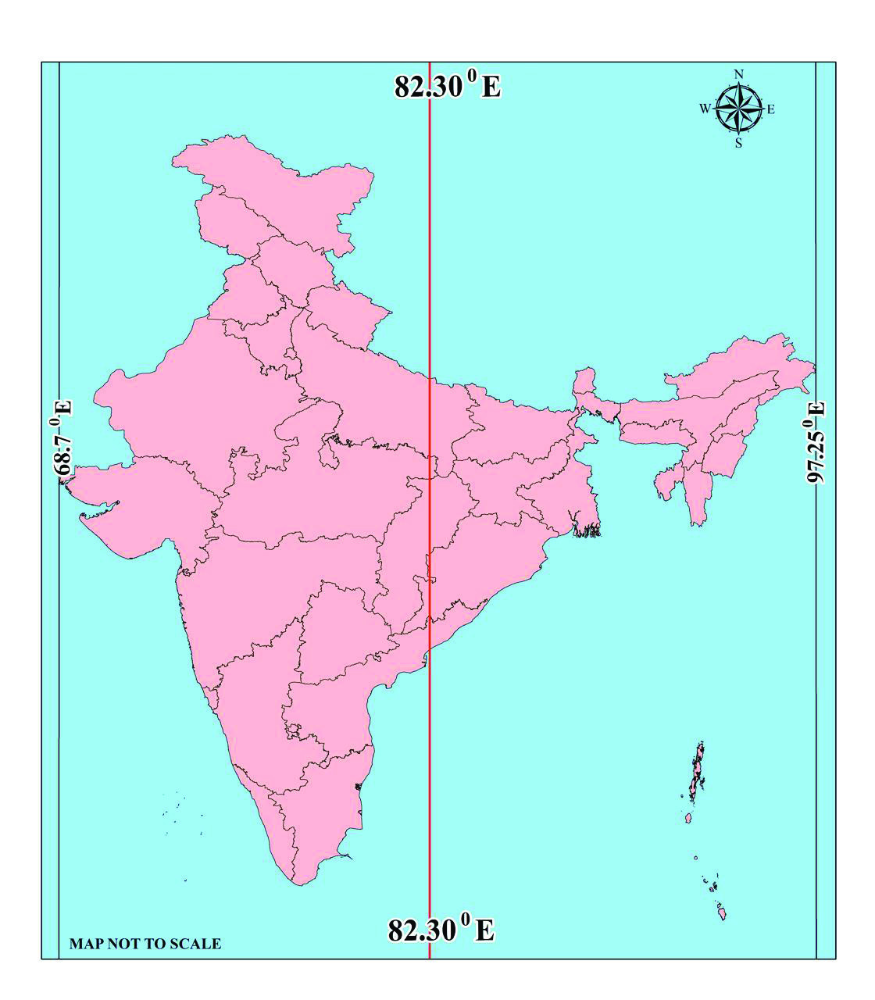
55
ഭൂൂമിിയുുടെെ ചലനങ്ങൾ:
ഭ്രമണവുംംc പരിിക്രമണവുംംc
1. ഗ്രീനിിച്ച്് മെെറിിഡിിയനിിൽ (00 രേ�ഖാംശം) രാവിലെെ 10 മണി ആയിിരിക്കുമ്പോോƠോൾ
തൊ�ൊ
ട്ടടുത്ത് ഒരു ഡിിഗ്രി കിഴക്കുംം� ഒരു ഡിിഗ്രി പടിഞ്ഞാാറും�ം സമയം എത്രയാായിിരിക്കുംം�?
2. ഗ്രീനിിച്ച്് മെെറിിഡിിയനിിൽ (00 രേ�ഖാംശം) രാത്രി 9 മണിയായിിരിക്കുമ്പോോƠോൾ 300
കിഴക്ക്് സമയം എത്രയാായിിരിക്കുംം�
?
10 പടിഞ്ഞാാറ്
?
?
?
00
00
10 AM
9 PM
10 കിഴക്ക്
300 കിഴക്ക്
ഇന്ത്യയൻ സ്റ്റാാൻഡേ�ർഡ് സമയംം
(Indian Standard Time)
ഇന്ത്യയയിൽ എങ്ങനെ�യാാണ്
് മാാനകസ
മയംം കണക്കാാക്കു
ന്നത്് എന്ന് നോ�ോക്കാം. ഇന്ത്യയയുടെെ കിഴക്കേÚ അറ്റത്തുുള്ള
സംംസ്ഥാാനമാാ
യ അരുണാാചൽപ്രദേ�ശുംംc
(970.25
കിഴക്ക്) പടിഞ്ഞാാറേ� അറ്റത്തുുള്ള സംംസ്ഥാാനമാാ
യ
ഗുജറാാത്തുംംc (680.7 കിഴക്ക്) തമ്മിിൽ ഏകദേ�ശംം
300
രേ�ഖാംശാാവ്യയത്യാാ�സംം ഉള്ളതിിനാാൽ രണ്ട്് മണിിക്കൂൂറോ�ോളംം
പ്രാാദേ�ശിികസ
മയംം വ്യയത്യാാ�സമുണ്ട്്. ഇതുകൊ�ൊണ്ടു
ുള്ള
പ്രാായോ�ോഗിക ബുദ്ധിിമുട്ട് ഒഴിവാാക്കുന്നതിിന്് രാാജ്യയത്ത്
ഒരു മാാനകസ
മയംം നിർണ്ണയിച്ചിട്ടുണ്ട്്. 7½0 യുടെെ
ഗുണിിതമാായ 82½0 കിഴക്ക് രേ�ഖാംശരേ�ഖയെ� ഇന്ത്യയയിൽ
മാാനകരേ�ഖാം
ംശരേ�ഖയാായി തിിരഞ്ഞെ�ടുുത്തുു. ആ
രേ�ഖയിലുള്ള പ്രാാദേ�ശിികസ
മയത്തെ� ഇന്ത്യയയുടെെ
മാാനകസ
മയമാായി കണക്കാാക്കുന്നുു.
ഗ്രീനിിച്ച്് രേ�ഖയുംം� (00) ഇന്ത്യയുടെെ മാനകരേ�ഖാംശരേ�ഖയുംം� (82½0 കിഴക്ക്്) തമ്മിിൽ
എത്ര സമയവ്യത്യാാ�സമുണ്ട്?
സമയമേ�
ഖലകൾ (Time Zones)
അന്താാരാാ
ഷ്ട്രധാാരണ
പ്രകാാരംം ലോോകത്തെ�
ഒരു മണിിക്കൂൂർ സമയ
വ്യയത്യാാ�സത്തിൽ 24 മേ�ഖലകളാായിി തിിരിിച്ചിട്ടുണ്ട്്. ഇവയാാണ്
സമയമേ�ഖലകൾ. ഓരോ�ോ മേ�ഖലയിലുംംc 150 രേ�ഖാംശരേ�ഖ വ്യാാ�പ്തിിയുണ്ട്്.
ചിിത്രംം 3.21 l
Page 56

56
ഇന്ത്യയയുടെെ കിഴക്കേÚ അറ്റത്തുുള്ള സംംസ്ഥാാനമാാ
യ അരുണാാചൽ
പ്രദേ�ശുംംc പടിഞ്ഞാാറെെ അറ്റത്തുുള്ള ഗുജറാാത്തുംംc തമ്മിിൽ ഏകദേ�ശംം
രണ്ട്് മണിിക്കൂൂറാാണ് വ്യയത്യാാ�സമെെന്ന് തിിരിിച്ചറിഞ്ഞല്ലോലോƽോ. വ്യയത്യാാ�സംം
കുറവാായതുകൊ�ൊണ്ടു
ുതന്നെ�
രാാജ്യയത്തിന്് പൊൊതുുവാായി ഒരു മാാനകസ
മയംം
തിിരഞ്ഞെ�ടുുക്കുന്നതിിൽ ബുദ്ധിിമുട്ടുണ്ടാാകി
ില്ല. എന്നാാൽ രേ�ഖാംശ
വ്യാാ�പ്തിി കൂൂടിയ റഷ്യയ, കാാനഡ
, യു.എസ്്.എ, ഓസ്്ട്രേğലിയ തുടങ്ങിയ
രാാജ്യയങ്ങളിൽ നിരവധിി സമയമേ�ഖലകളും�ം മാാനകസ
മയവുംംc ഉണ്ടാാകുംംc.
അന്താരാഷ്ട്ര ദിിനാങ്കരേ�ഖ (International Date Line)
ചിിത്രംം 3.22 l
ചിിത്രംം 3.23 l
യൂൂറോ�ോപ്പ്്
യൂൂറോ�ോപ്പ്്
ഏഷ്യയ
ഏഷ്യയ
ആഫ്രിിക്ക
ആഫ്രിിക്ക
വടക്കേ�
അമേ�രിിക്ക
വടക്കേ�
അമേ�രിിക്ക
തെ�ക്കേ� അമേ�രിിക്ക
തെ�ക്കേ� അമേ�രിിക്ക
ആസ്്ട്രേğലിയ
ആസ്്ട്രേğലിയ
അൻ്റാർട്ടിിക്ക
അൻ്റാർട്ടിിക്ക
ഓഷ്യാാ�നിയ
ഓഷ്യാാ�നിയ
ലോ�ോകംം
ലോ�ോകംം
സമയ
മേ�ഖലകൾ
സമയ
മേ�ഖലകൾ
Page 57
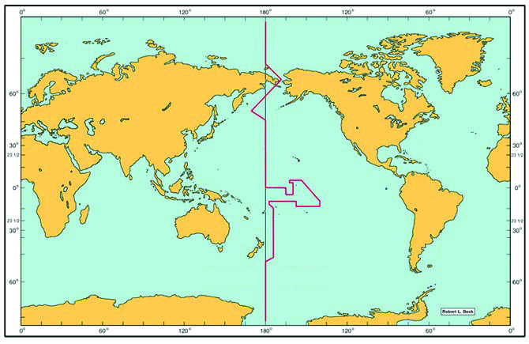
57
ഭൂൂമിിയുുടെെ ചലനങ്ങൾ:
ഭ്രമണവുംംc പരിിക്രമണവുംംc
ചിത്രംം 3.23 ൽ ഗ്രീീനിച്ച് രേ�ഖയിൽ ഡിിസംംബർ 25 വൈൈകുുന്നേ�രംം 6 മണിി
ആയിരിിക്കുമ്പോോƠോൾ 1800 കിഴക്കുംംc 1800 പടിഞ്ഞാാറും�ം ഏത് ദിിവസവുംംc
സമയവുമാാണ്?
ചിത്രംം 3.24 ൽ നിന്നുംംc 1800 കിഴക്കുംംc 1800 പടിഞ്ഞാാറും�ം രേ�ഖാംശരേ�ഖകൾ
ഒറ്റരേ�ഖാംശരേ�ഖയാാണെ�ന്ന് മനസ്സിിലാാക്കാം. അതാായത് 1800 രേ�ഖാംശരേ�ഖ
യുടെെ ഇരുവശത്തുുമാായി 24 മണിിക്കൂൂർ സമയ വ്യയത്യാാ�സമുണ്ട്്. ഈ
രേ�ഖ മുറിച്ച് കിഴക്കോോÚോട്ട് യാാത്ര ചെ�യ്യുുന്ന വ്യയക്തിക്ക് ഒരു കലണ്ടർദിിനംം
നഷ്ടമാാവു
ുകയുംംc പടിഞ്ഞാാറോ�ോട്ട് യാാത്ര ചെ�യ്യുുന്ന വ്യയക്തിക്ക് ഒരു ദിിവസംം
അധിികംം ലഭിിക്കുകയുംംc ചെ�യ്യുംംc.
അന്താാരാാ
ഷ്ട്ര ഉടമ്പടി പ്രകാാരംം 1800 രേ�ഖാംശരേ�ഖയെ� അന്താാരാാ
ഷ്ട്രദിിനാാ
ങ്കരേ�ഖയാായി കണക്കാാക്കുന്നുു. ഈ രേ�ഖമുറിച്ച് പടിഞ്ഞാാറോ�ോട്ട്
പോോോകുന്ന സഞ്ചാാരിികൾ ഒരു ദിിവസംം കൂൂട്ടിിയുംംc, കിഴക്കോോÚോട്ട് പോോോകുന്ന
സഞ്ചാാരിികൾ ഒരു ദിിവസംം കുറച്ചുംംc സമയംം കണക്കാാക്കുന്നുു.
ചിിത്രംം 3.25 l
ചിിത്രംം 3.24 l
അന്താരാഷ്ട്ര
ദിിനാങ്കരേ�ഖ
Page 58

58
തുടർപ്രവർത്തനങ്ങൾ
l നിിങ്ങളുുടെെ പ്രദേ�ശത്ത് വിിവിിധ ഋതുക്കളിൽ പ്രകൃതിിയിൽ അനുഭവപ്പെ�ടു
ുന്ന മാാറ്റങ്ങൾ
നിരീക്ഷിിച്ച് സാാമൂൂഹ്യയശാാസ്ത്ര നിരീക്ഷണപു
ുസ്തകത്തിൽ കുറിക്കുക.
l ഡിിസംംബർ 22, ജൂൂൺ 21 എന്നീ ദിിവസ
ങ്ങളിൽ നിങ്ങളുുടെെ സ്ഥലത്തെ� രാാത്രിിയുടെെയുംംc
പകലിിന്റെെźയുംംc ദൈൈർഘ്യംംc സൂൂര്യോ�ോ�ദയ-അസ്തമയസമയങ്ങൾ കണക്കാാക്കി കണ്ടെ�
ത്തുുക.
അന്താാരാാ
ഷ്ട്ര ദിിനാാങ്കരേ�ഖ കടന്നുുപോോോകുന്ന രാാജ്യയങ്ങളിൽ ഈ രേ�ഖയുടെെ
ഇരുവശങ്ങളിലാായി രണ്ട്് ദിിവസംം വരുുന്ന അവസ്ഥ ഒഴിവാാക്കാാനാായി,
ദിിനാാങ്കരേ�ഖയിൽ ചില ക്രമീകരണ
ങ്ങൾ വരുുത്തിയിട്ടുണ്ട്്. ചിത്രംം 3.25ൽ
കാാണുന്നതുുപോോോലെെ പസഫിിക് സമുുദ്രത്തിൽ ജനവാാസമു
ുള്ള കരഭാാഗ
ങ്ങളെ� ഒഴിവാാക്കുംംc വിിധമാാണ് ഈ രേ�ഖ ക്രമീകരിിച്ചിരിിക്കുന്നത്്.
ഭൂൂമിയുടെെ ഭ്രമണവുംംc പരിിക്രമണവുംംc എങ്ങനെ�യാാണ്
് നമ്മു
ുടെെ ജീീവിി
തത്തെ�
സ്വാാ�ധീനിക്കുന്നതെ�ന്ന്
് പരിിചയപ്പെ�ട്ടല്ലോലോƽോ. ഇതുമൂൂലംം പ്രകൃതിിയിൽ
സംംഭവിിക്കുന്ന വൈൈവിിധ്യയമാാർന്ന മാാറ്റങ്ങൾ നമ്മു
ുടെെ ദൈൈനംംദിിന
പ്രവർത്തനങ്ങൾക്ക് ഊർജവുംംc ഉത്സാാഹവുംംc നൽകുംംc. ലോോകത്തിലെെ
വിിവിിധ ഭാാഗങ്ങളിൽ ഋതുക്കളിലുംംc സമയത്തിലുംംc അനുഭവപ്പെ�ടു
ുന്ന
വ്യയത്യാാ�സംം ആ സ്ഥലങ്ങളിലെെ സാാമൂൂഹിക-സാംസ്കാാരിിക ജീീവിിതത്തെ�
സ്വാാ�ധീനിക്കുന്നുു.